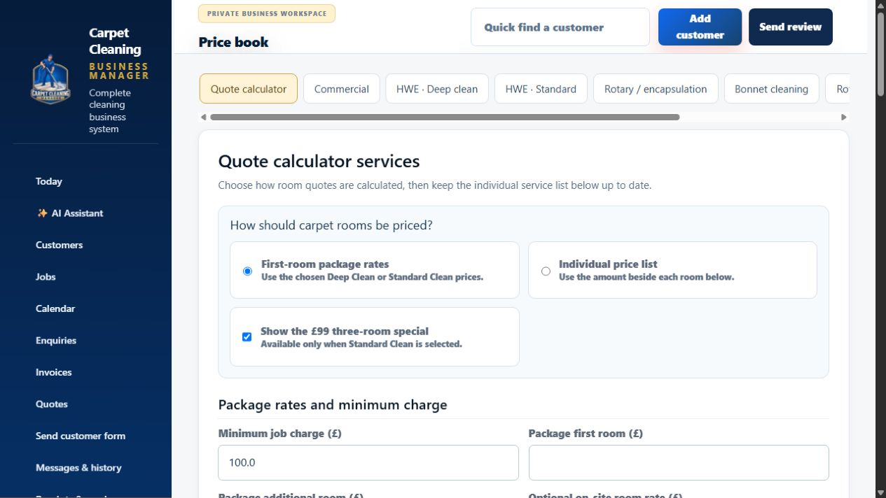
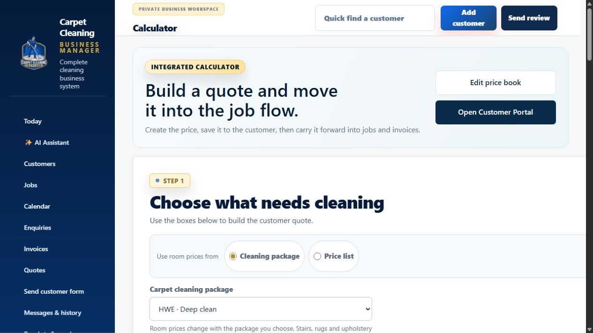
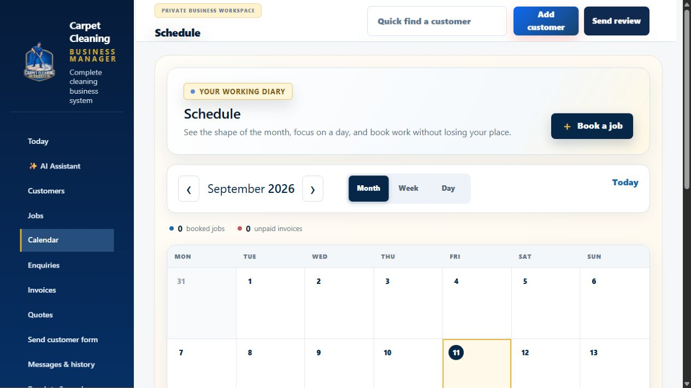

The inquiry starts on your website.
A professional website makes it easy to ask for a quote. The inquiry and contact details become the start of a connected customer record.
Let’s freshen up your home.
Tell us a little about the cleaning you need.
A quick response keeps the conversation moving.
Set the first response for five minutes after the inquiry. Thank the customer by text or email and ask for the cleaning list while their interest is fresh.
Thanks, PaulExample automatic text · Email version available too
The customer tells you what needs cleaning.
Their reply stays with their record. Rooms, upholstery and extras give the system the information it needs for a draft quote.
The cleaning list is now ready to price.
Your own prices drive the calculation.
Choose first-room and additional-room rates or an individual price list. Keep professional deep clean, standard clean, upholstery and extras under your control.

The quote is put together automatically.
AI assistance turns the cleaning list into a draft. In this example, four rooms plus hall, stairs and landing total £255 using your deep-clean package rates.
Lauren’s professional deep clean
Targeted pre-spray, CRB agitation and hot-water extraction.
Review, adjust and send.
Check the cleaning method, quantities and price. Add an extra or optional deposit, then send the quote or download a copy.

Accepted work moves into the diary.
Choose the appointment and keep the quote, customer details and access notes with the job.

Send a proper booking confirmation.
A clear email gives the customer the date, arrival window and what to expect, in your business branding.
We look forward to seeing you, Lauren.
Your professional carpet clean is confirmed.
We’ll be cleaning the lounge, three bedrooms, hall, stairs and landing. Please move small items where possible and let us know about access.
The Carpet Cleaning CompanyKeep the customer informed before the visit.
Use a reminder a couple of days before the appointment. Send an on-the-way update when you are actually heading to the job.
Ask for a Google review after the clean.
Make it easy for a customer to share their experience with a direct review link in a thank-you email or text.
Thank you for having us, Lauren.
We hope you’re pleased with your freshly cleaned carpets. Would you leave a quick Google review about your experience? It means a lot to our small business.
Bring the customer back six or twelve months later.
Set your rebooking timing and message. Use a helpful reminder or relevant offer to turn previous customers into new bookings.
Ready for a freshen-up?
Hi Lauren, it’s been six months since your last carpet clean. If you’d like a refresh, reply with what needs cleaning and we’ll help with a new quote.
And when a customer goes quiet?
A non-reply follow-up becomes the next action. Review the draft and choose text, email or both. A customer reply should stop the pending follow-up, so the conversation stays relevant.
Explore the working system